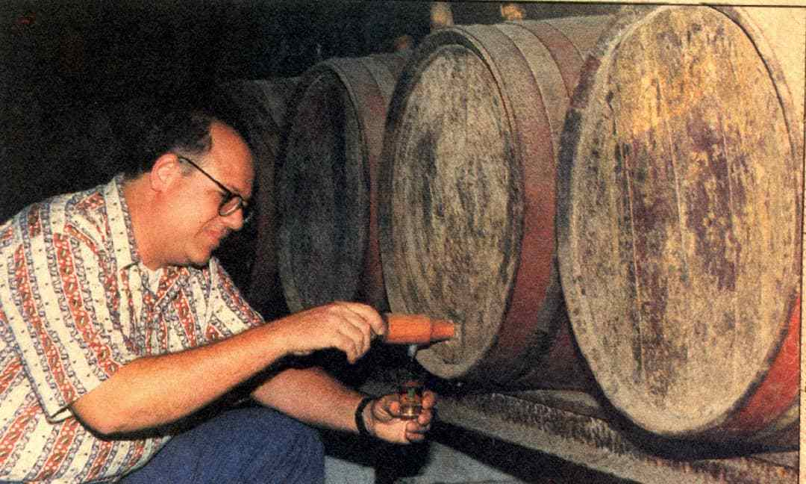
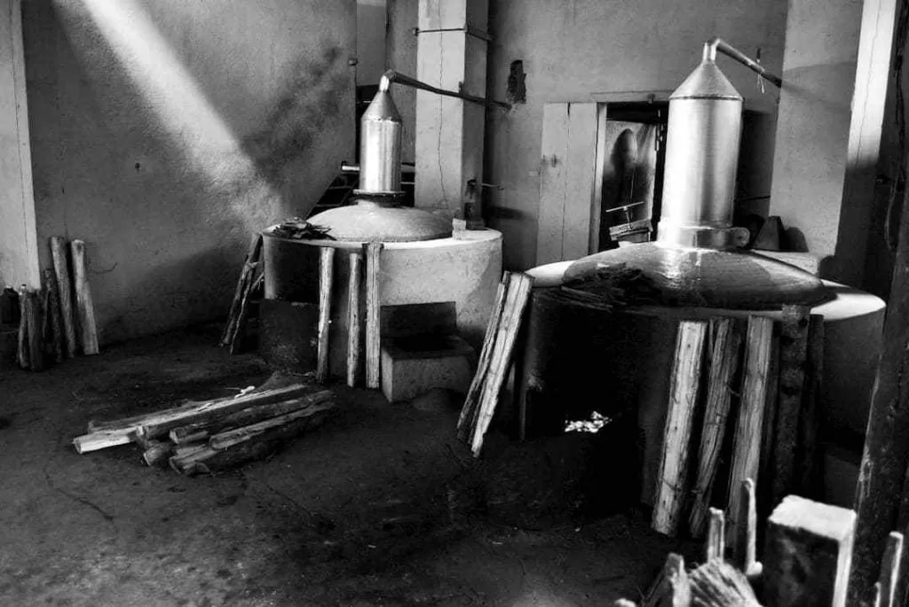
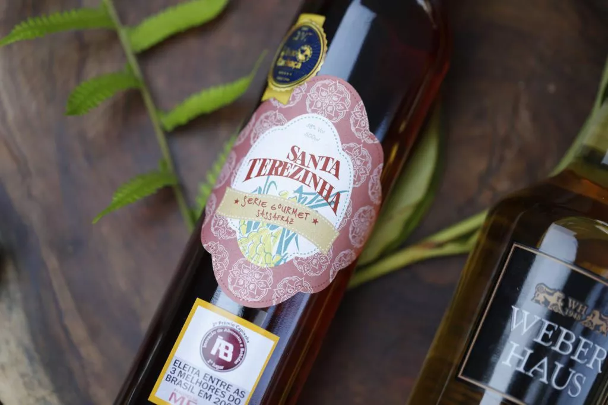
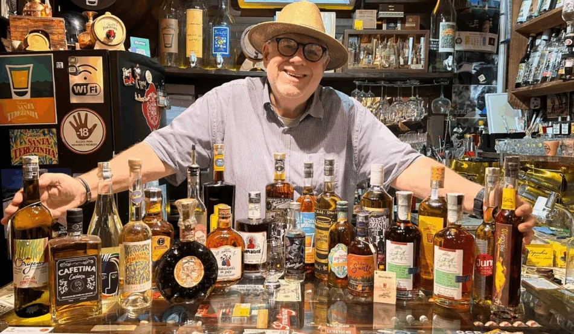
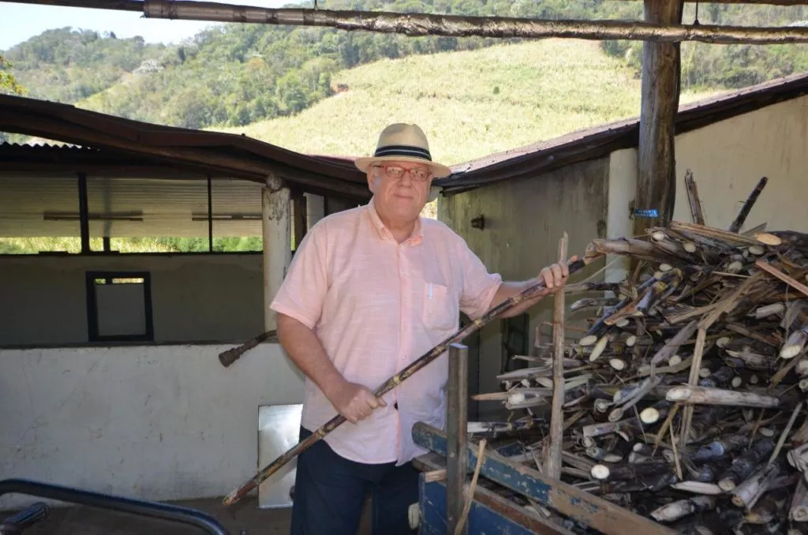
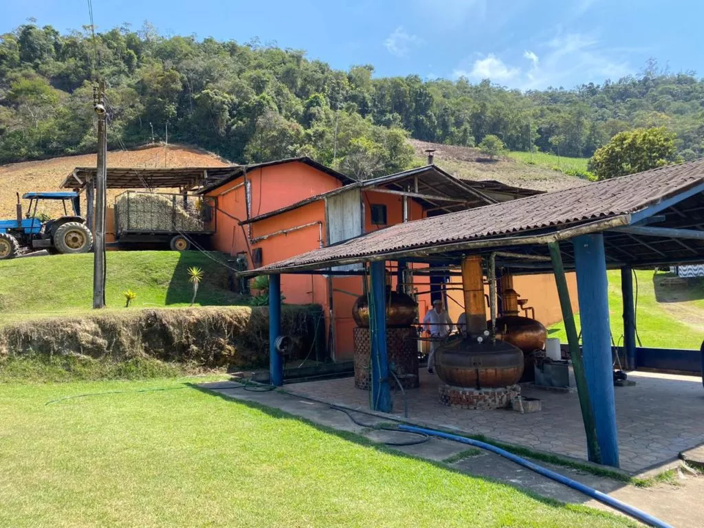
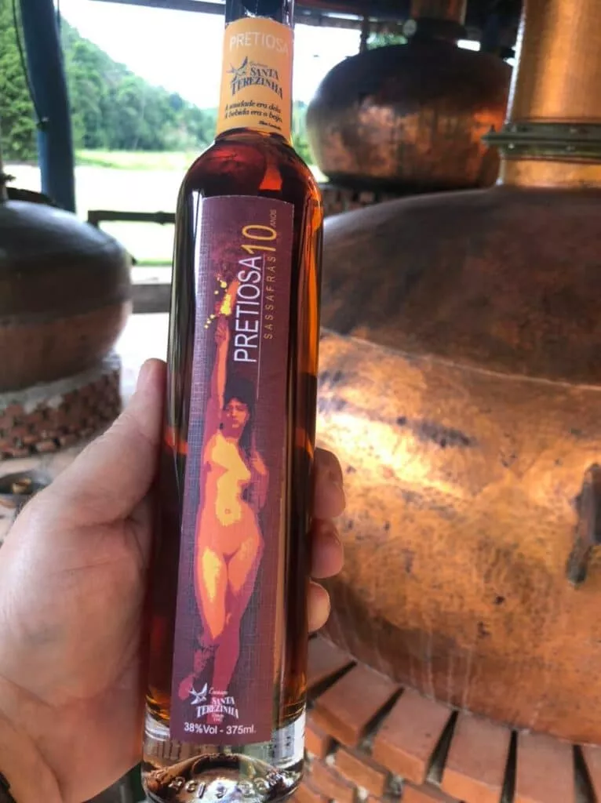

Em meio às montanhas da Serra Capixaba, nasceu uma tradição que atravessaria gerações.
Muito antes da existência dos rótulos, dos prêmios e do reconhecimento nacional, existia o trabalho diário de uma família dedicada à terra, à produção e à arte de destilar.
Foi dessa dedicação que surgiu a base daquilo que viria a se tornar a Destilados Santa Terezinha.
Ao longo de mais de oito décadas, essa história continuou sendo construída por pessoas que acreditaram que tradição não significa permanecer parado, mas evoluir sem perder a essência.

1943
O Início de Tudo
Ao lado de Artemio Menegatti, Antonio Menegatti participou da construção dos primeiros passos da destilaria.
O que começou de forma artesanal, respeitando o tempo da fermentação e da destilação, transformou-se em uma história marcada pela busca constante por qualidade.
Mais do que produzir bebidas, construía-se um legado baseado em trabalho, honestidade e compromisso com a excelência.
Nascia ali uma tradição que atravessaria gerações e se tornaria parte da história da destilação capixaba.
O Tempo Molda Grandes Histórias
Ao longo das décadas, a empresa evoluiu sem abrir mão dos valores que estiveram presentes desde o início.
A experiência acumulada, o aperfeiçoamento dos processos e a dedicação à qualidade permitiram que a Santa Terezinha construísse uma identidade própria.
Cada safra, cada lote e cada etapa dessa trajetória ajudaram a consolidar uma reputação construída com paciência, consistência e respeito pelo consumidor.
O tempo transformou estruturas, processos e mercados, mas fortaleceu aquilo que sempre foi mais importante: o compromisso com a excelência.
Quatro Gerações
1943 Antonio Menegatti e Artemio Menegatti Os primeiros passos de uma tradição que atravessaria gerações.
Segunda Geração Antonio Menegatti e Adwalter Menegatti O fortalecimento da marca e a consolidação da destilaria.
Terceira Geração Adwalter Menegatti A modernização dos processos e o foco crescente em qualidade, identidade e diferenciação.
Quarta Geração Adwalter Menegatti e Igor Menegatti Experiência, conhecimento técnico e inovação trabalhando lado a lado para construir os próximos capítulos dessa história.
Tradição e Inovação Caminham Juntas
Hoje, Adwalter Menegatti e Igor Menegatti trabalham lado a lado, unindo experiência, conhecimento técnico e inovação para continuar escrevendo a história da Destilados Santa Terezinha.
A experiência construída ao longo de mais de oito décadas encontra novas tecnologias, pesquisa, desenvolvimento de produtos e novos desafios.
Mais do que preservar uma herança familiar, o objetivo é continuar evoluindo, criando novas possibilidades e levando a qualidade da destilaria para novos mercados.
A mesma dedicação que guiou as gerações anteriores continua presente em cada decisão tomada para o futuro da empresa.
Do Cobre a Madeira
Muito mudou desde os primeiros anos da destilaria.
Os equipamentos evoluíram, os processos foram aperfeiçoados e a estrutura foi modernizada.
Mas a essência permanece a mesma.
O compromisso com a qualidade continua presente em cada etapa da produção, unindo tradição e tecnologia para criar destilados que respeitam sua origem e acompanham seu tempo.
Cada nova conquista é resultado do equilíbrio entre o conhecimento acumulado pelas gerações anteriores e a busca constante por inovação.






Novos Horizontes
Hoje, a Destilados Santa Terezinha atua muito além das fronteiras que marcaram seu início.
A experiência construída ao longo de mais de oito décadas permite o desenvolvimento de novos produtos, novas categorias de bebidas e novos projetos.
Sem abandonar suas raízes, a destilaria continua olhando para o futuro, explorando oportunidades e ampliando sua atuação com a mesma dedicação que sempre guiou sua trajetória.
Mais do que acompanhar as transformações do mercado, a Santa Terezinha busca participar ativamente delas, construindo novos caminhos para as próximas gerações.
Reconhecimento Nacional
A busca constante pela qualidade levou a Destilados Santa Terezinha a conquistar reconhecimento entre especialistas, jornalistas, apreciadores e veículos de referência no universo dos destilados brasileiros.
Ao longo dos anos, sua história e seus produtos foram destaque em publicações especializadas, reforçando a posição da marca entre os nomes mais respeitados do setor.
Mais do que um reconhecimento pelos produtos, essas conquistas representam o resultado de décadas de dedicação, trabalho e aperfeiçoamento contínuo.
Cada menção, premiação ou reportagem reflete a paixão que sempre esteve presente na construção da história da destilaria.